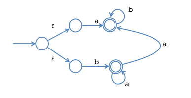
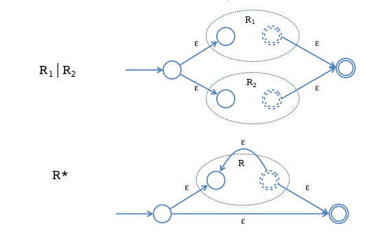

lexers / lexing
Lexers: Generates program units.
How to recover trace during errors?
Source-code position of the character can be stored in lexer for error reflection.
Why do some regular expressions take exponential time?
Backtracking occurs due to choice regex:
R1 | R2If we write bad regexes:
('a'+) 'b' | ('a'+) 'c' | ('a'+) dInstead of:
('a'+) ('b'|'c'|'d')We would backtrack a lot more.
We can reduce SAT to: Recognizing a string by regex
Hence regex is in same class. We can do it the other way round as well.
Hence regex is npcomplete.
How to tiebreak?
Regular expressions are ambiguous: Given the string “ifx = 0”
We could parse it has:
| if | x | = | 0 |Or:
| ifx | = | 0 |Give some matches higher priority.
What solutions for lexing exist?
- Use Ocamllex Generates parse table
Lexing to Finite automata (DFA)
state is regex we are matching transition is successfully matching the regex.
Lexing to NFA
transition forks for choice, because there could be multiple ways to match.

ab* | ba*(ab)?RE to NFA

NFA to DFA conversion
Run all executions of NFA in parallel. Keep track of possible states: “finite fingers”
Context-Free Grammars
Needed for describing nested chain structure / syntactic structure. e.g. if else, balanced paranthesis etc…
https://www.geeksforgeeks.org/regular-expression-vs-context-free-grammar/
Check a phrase is part of our language. See if language rules can produce the phrase.
parse tree is concrete syntax structure ast abstracts unneeded info, preserving structure of syntax.